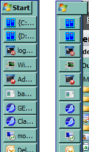

| Classic Shell http://www.classicshell.net/forum/ |
|
| classic shell shrinks the taskbar http://www.classicshell.net/forum/viewtopic.php?f=12&t=2703 |
Page 1 of 1 |
| Author: | lvm [ Tue May 27, 2014 10:33 pm ] |
| Post subject: | classic shell shrinks the taskbar |
Windows 7, vertical taskbar on the left with auto-hide, classic shell 4.1.0, start button is NOT replaced, classic-style start menu, no skin. When ClassicStartMenu.exe starts taskbar becomes narrower, on the screenshot below taskbar on the left is before and on the right is immediately after ClassicStartMenu.exe has been started. Note that the start button exceeds taskbar width.  |
|
| Author: | Ivo [ Wed May 28, 2014 8:45 am ] |
| Post subject: | Re: classic shell shrinks the taskbar |
I am unable to reproduce on Windows 7 Pro x64. Download the Classic Shell Utility from here: http://www.classicshell.net/downloads/ Run it and send me the log file. |
|
| Author: | Ivo [ Wed May 28, 2014 8:46 am ] |
| Post subject: | Re: classic shell shrinks the taskbar |
Also try different start button settings and different Windows themes and let me know if that makes any difference. |
|
| Author: | lmh3 [ Thu May 11, 2017 6:54 am ] |
| Post subject: | Re: classic shell shrinks the taskbar |
I have the same problem, Windows 7 x64, Classic Shell 4.3.0, classic start menu, no skin. The taskbar shrinks after every reboot as depicted in first post. The taskbar is on the left side of the screen, locked, autohide is on. In Classic Shell settings "Customize taskbar" is off. It may not directly relate to Classic Shell, but it seems to be triggered by it. I can trigger the taskbar shrinking: Go to Classic Shell settings / Taskbar Click box "Customize Taskbar" on, no other changes, no need to click ok Taskbar shrinks as depicted in first post Also, with "Customize taskbar" on, unchecking the box (no need to click ok) will shrink the taskbar as well. |
|
| Page 1 of 1 | All times are UTC - 8 hours [ DST ] |
| Powered by phpBB® Forum Software © phpBB Group https://www.phpbb.com/ |
|